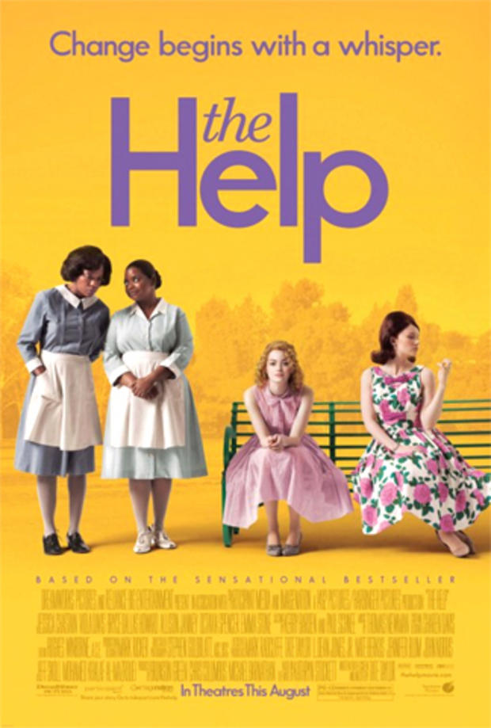
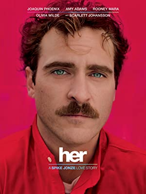

MOVIE GALLERY

WALL·E
In a distant, but not so unrealistic, future where mankind has abandoned earth because it has become covered
with trash from products sold by the powerful multi-national.
Director : Andrew Stanton
Year : 2008
Stars : Ben Burtt(voice), Elissa Knight(voice)
Language : English
Rating : 8.4/10

Pirates of the Caribbean
Blacksmith Will Turner teams up with eccentric pirate "Captain" Jack Sparrow to save his love, the governor's daughter, from Jack's former pirate allies, who are now undead.
Director : Gore Verbinski
Year : 2003
Stars : Johnny Depp, Geoffrey Rush
Language : English
Rating : 8.1/10

The Help
An aspiring author during the civil rights movement of the 1960s decides to write a book detailing the African American maids' point of view on the white families for which they work.
Director : Tate Taylor
Year : 2011
Stars : Viola Davis, Emma Stone
Language : English
Rating : 8.1/10

Her
In a near future, a lonely writer develops an unlikely relationship with an operating system designed to meet his every need.Theodore is a lonely man in the final stages of his divorce.
Director : Spike Jonze
Year : 2013
Stars : Joaquin Phoenix, Amy Adams
Language : English
Rating : 8/10